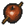
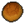
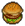
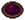
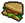
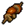
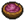
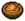

Cook
It’s not haute cuisine, but there’s plenty of it. You create extra portions of basic dishes.—speaker
Cook is a Keeper perk available in the Farming talent tree.
Prerequisites
 Green mastery +1
Green mastery +1
Effects
+2 to most basic dishes
| Food | Results |
|---|---|
 Baked apple |
5 to 7 |
| Berry Pie  Bread Burger Grated beets Sandwich |
4 to 6 |
 Baked mushrooms Berry smoothie Yogurt |
3 to 5 |
| 2 to 4 | |
| Beet slices | 2 to 3 |
|